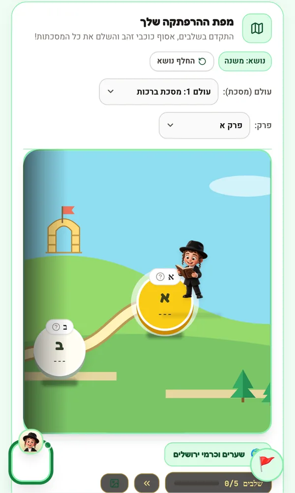
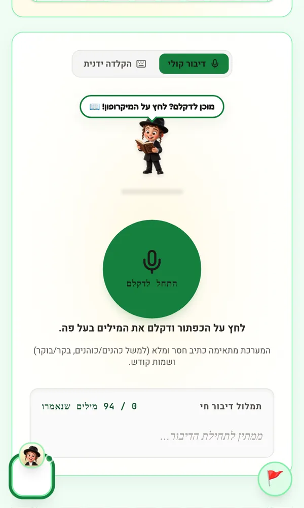
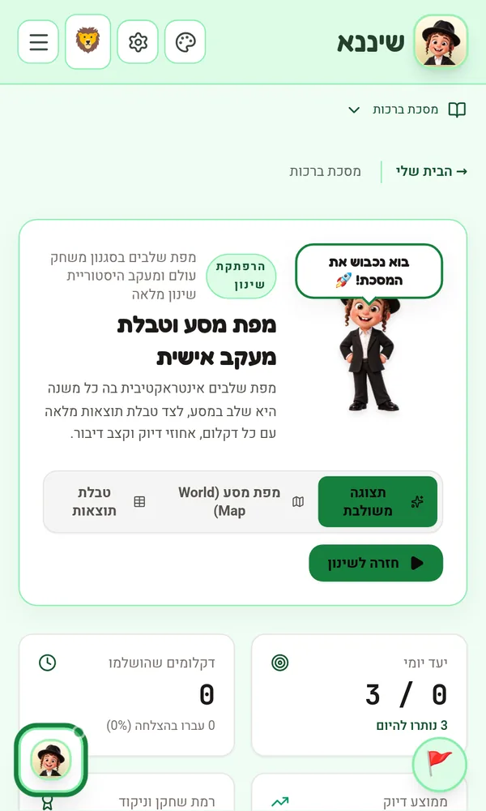
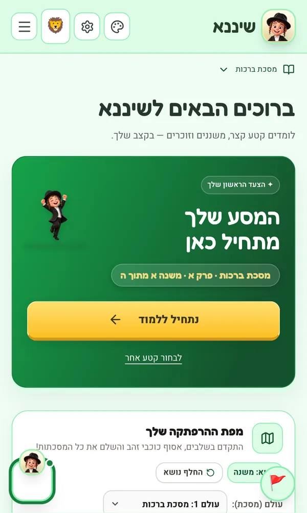
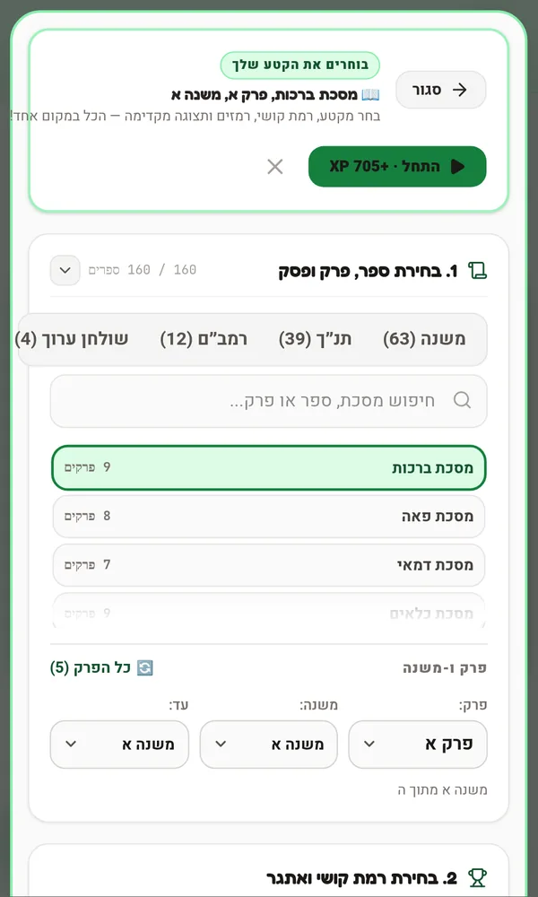
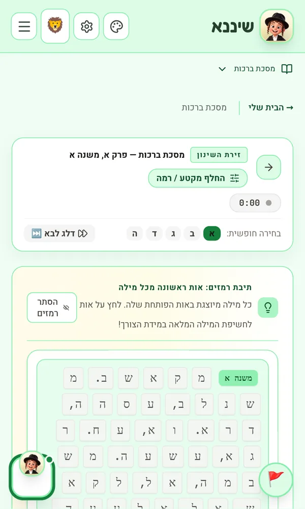
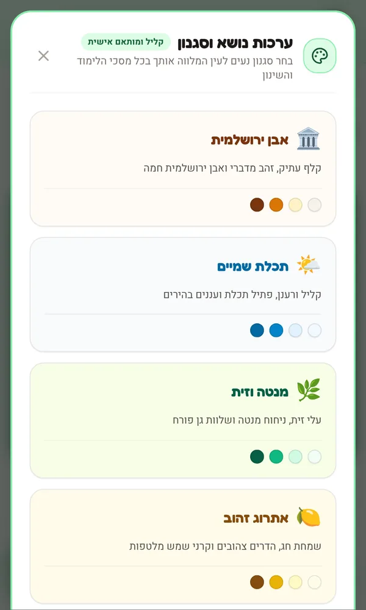

דקלום בקול, בדיקה בזמן אמת
זיהוי קולי בעברית שמבין גם ניקוד. כל מילה נבדקת תוך כדי הדקלום, כך שתדעו מיד איפה נתקעתם.
שיננא היא אפליקציה חינמית לשינון משנה, תנ״ך, גמרא ועוד. מדקלמים בקול, שיננא בודקת כל מילה בזמן אמת, ואתם צוברים כוכבים ונקודות בדרך אל הפרק הבא.
בלי הכנות ארוכות. פותחים, בוחרים ומתחילים.
מסכת, פרק ומשנה, או ספר, פרק ופסוק. קטע קצר או פרק שלם, ברמת קושי שמתאימה לכם.
לוחצים על המיקרופון ומדקלמים. שיננא משווה כל מילה לטקסט, מסמנת מה נפל ונותנת ניקוד.
מסיימים שלב, צוברים כוכבים, ושיטת SM-2 מחזירה את הקטע בדיוק לפני שהוא נשכח.
זיהוי קולי בעברית שמבין גם ניקוד. כל מילה נבדקת תוך כדי הדקלום, כך שתדעו מיד איפה נתקעתם.
כל פרק הוא שלב בשביל מתפתל. פותחים את השלב הבא, ולכל עולם יש נוף משלו: משנה, תנ״ך וגמרא.
מהאות הראשונה של כל מילה ועד דקלום מלא. מתחילים עם עזרה ומורידים אותה בהדרגה.
האלגוריתם קובע מתי כל קטע צריך לחזור, לפי כמה טוב ידעתם אותו. עשר דקות ביום מספיקות.
יעד יומי, רצף ימים, תגים והישגים. הדירוג מתחלק לפי מדינה, נושא וספר, כדי שתמיד יהיה מי להתחרות מולו.
מאבן ירושלמית ועד ארקייד. מחליפים בכל רגע, וההתקדמות נשארת.

במקום רשימת פרקים יש עולם שלם. כל משנה היא עצירה בדרך, וצבע השלב מספר מה כבר למדתם ומה מחכה לחזרה.

לוחצים על המיקרופון ומדקלמים. התמליל מופיע בזמן אמת, והמילים שנפלו מסומנות, כדי שתדעו מה לחזק בפעם הבאה.

שיטת SM-2 מחשבת מתי כל קטע צריך לחזור. אתם רואים יעד יומי, רצף ודיוק, והאפליקציה מזכירה מה כדאי לחזור עליו היום.
צילומי מסך אמיתיים מהגרסה החדשה. גוללים הצידה כדי לראות עוד.




כל הטקסטים יורדים פעם אחת בהפעלה הראשונה (כ-11 מגה בייט), ומשם הכול עובד גם בלי חיבור לרשת. באוטובוס, בטיסה או בלי קליטה.
שינון למבחנים, בלי שעמום. כוכבים ודירוגים עושים את זה למשחק.
דרך כיפית לתרגל יחד. יעד יומי ורצפים מניעים להמשיך.
עשר דקות ברכבת או בהפסקה, ושינון שנשאר לשנים.
הצצה לאפליקציה: דקלום, מפה וחזרות חכמות.
כן. שיננא חינמית, בלי פרסומות ובלי רכישות באפליקציה. תרומות עוזרות לממן שרתים ומקורות חדשים.
כן. הטקסטים (כ-11 מגה בייט) יורדים פעם אחת בהפעלה הראשונה, ומשם האפליקציה עובדת גם בלי קליטה.
כל 63 מסכתות המשנה, התנ״ך כולו, הגמרא הבבלית, הרמב״ם ושולחן ערוך.
מדקלמים למיקרופון, והזיהוי הקולי בעברית משווה את מה שנאמר לטקסט מילה אחר מילה, כולל ניקוד, ומראה בדיוק איפה הייתה טעות.
שיטת חזרות מרווחות. האלגוריתם מחשב מתי כל קטע צריך לחזור, לפי כמה טוב ידעתם אותו, כך שחוזרים בדיוק לפני שוכחים.
אפשר לשחק עכשיו בדפדפן, בטלפון, בטאבלט ובמחשב, ויש גם גרסת בטא לאנדרואיד. גרסאות החנות בדרך.
ההקלטה לא עוזבת את המכשיר אלא אם ביקשתם שנבדוק אותה. כל הפרטים במדיניות הפרטיות.
שיננא חינמית ותישאר חינמית. תרומתכם מממנת שרתים, הקלטות ומקורות חדשים.
לתרומה מאובטחת